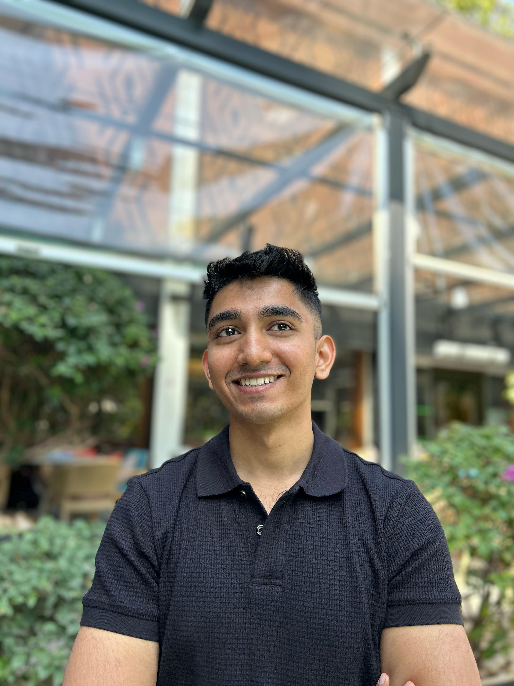
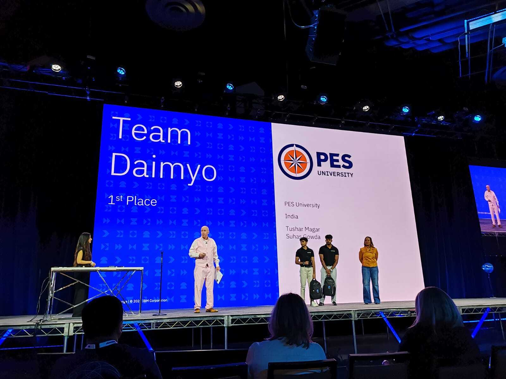
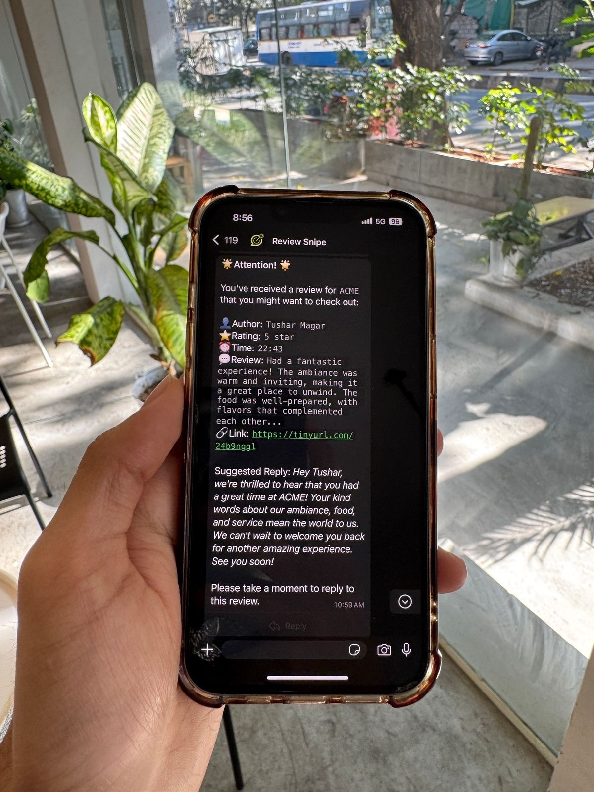
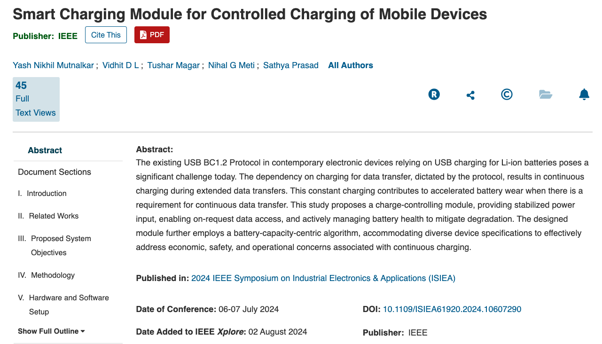
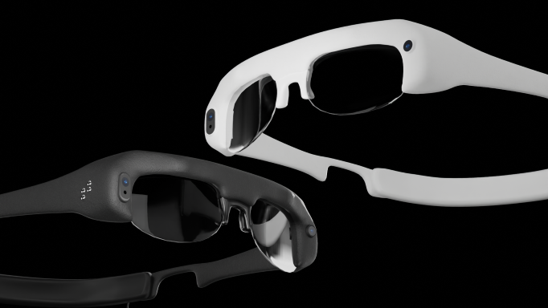
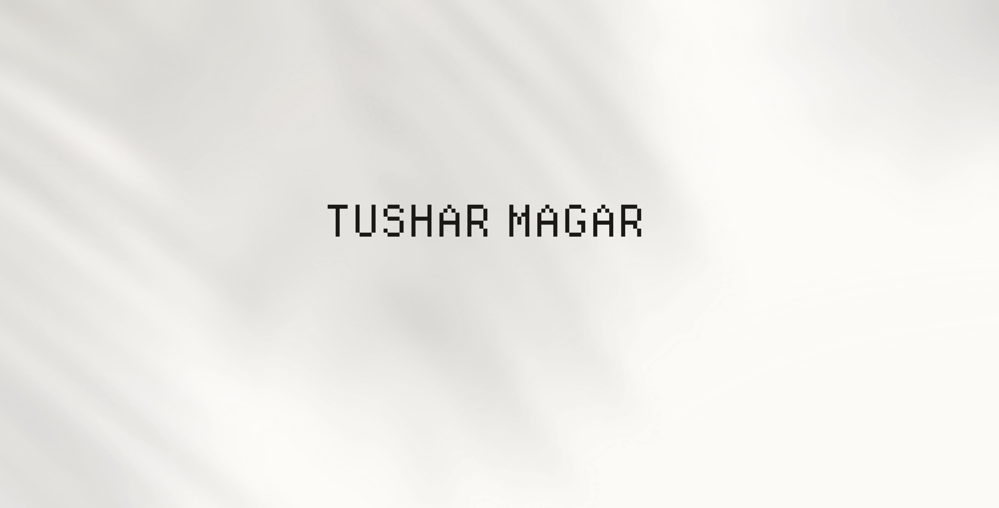
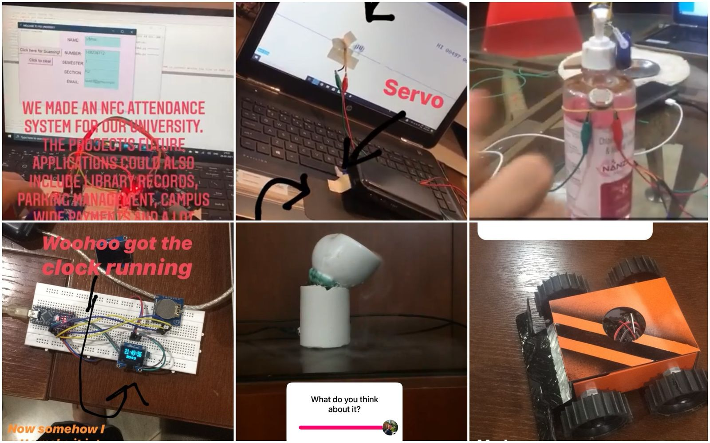
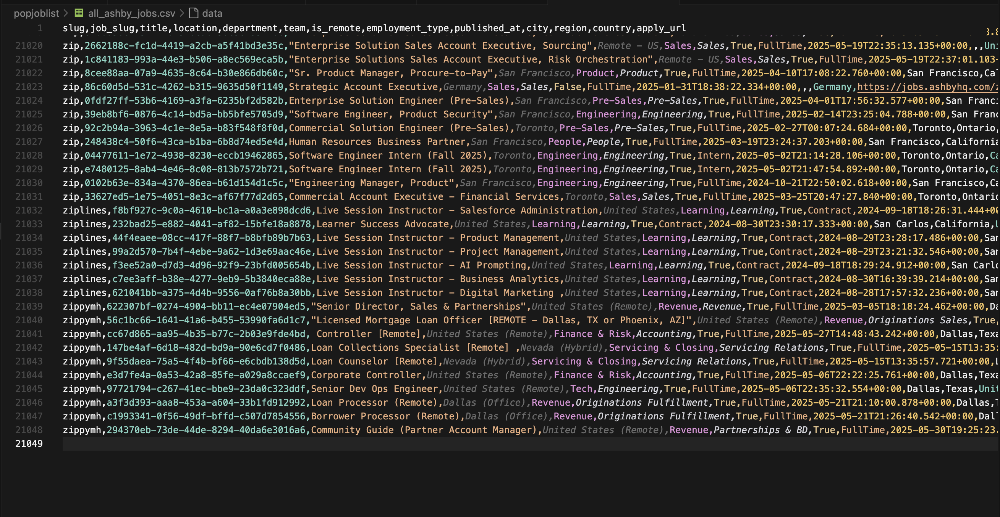
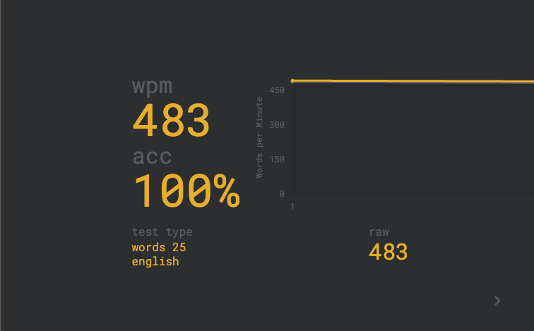
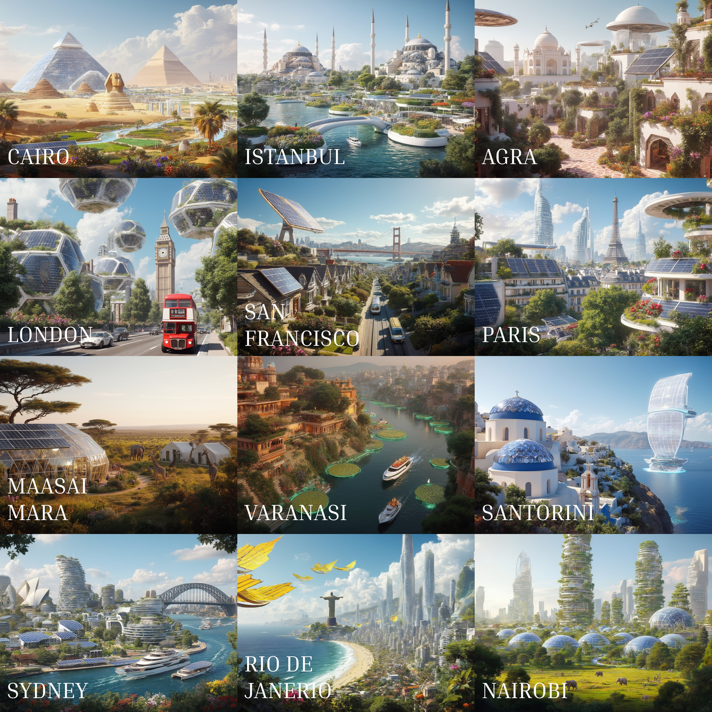

TUSHAR MAGAR
About me.

I'm passionate about simplifying workflows and building efficient systems that help teams focus on delivering exceptional experiences. I love solving meaningful problems by blending technology with smart design to create impactful solutions. I love working with people, understanding their needs, and crafting solutions that make a difference.
Professional experience
-
AI Resident at Lossfunk
Apr 2026 — Jun 2026Selected for Lossfunk's AI residency program.
-
Rowboat (YC S24)
Jun 2025 — Present- AI Solutions Engineer & DevRel Aug 2025 — Present
- AI Solutions Intern Jun 2025 — Jul 2025
Building AI-powered solutions and developer relations at a Y Combinator S24 startup.
-
Founder at Daimyo & ReviewSnipe
Jan 2024 — Aug 2025Helping restaurants make operations efficient and provide an extraordinary experience to customers.
- Waitlisted 40+ restaurants across India
- Ran a beta test with 4 leading restaurants in Bangalore
- Integrated with major restaurant-tech providers in India
- Received on-stage shoutouts at NRAI Food Delivery Summit and FICCI South Food Conference
- Backed by Microsoft for Startups and AWS for Startups
- 1st place winner at IBM TechXchange 2024 Hackathon for Generative AI Applications
- Top 7% of applicants to WTFund
-
Entrepreneur at Founders, Inc.
Dec 2024 — Jan 2025Chosen for the first Cold Start cohort from hundreds of applications worldwide.
- Built and iterated on venture ideas with early traction
- Collaborated with founders from across the world
- Learned from experienced startup mentors and operators
Projects.
A collection of my work spanning web applications, AI solutions, and electronics projects.
Click any project row to view details.
-
01 DaimyoAI-powered business-intelligence copilot that automates reporting, alerts, and data queries for restaurants. 2024

Led end-to-end development of a WhatsApp-based chatbot and notification system that pulls in POS data (LucidPOS, ReserveGo) to generate on-demand reports, anomaly alerts, and natural-language insights.
- Designed cloud infrastructure on Azure Functions for hourly data pipelines
- Implemented RAG-powered ad-hoc queries using WatsonX Granite & LangChain
- Saved beta-test restaurants 7–9 hours/week of manual work
-
02 ReviewSnipeAutomated Google review monitoring and AI-generated WhatsApp replies to boost customer engagement. 2024

Built a serverless pipeline that fetches Google reviews hourly, analyzes sentiment, and sends real-time alerts with AI-suggested replies via WhatsApp.
- Integrated with Google Business Profile API for review monitoring
- Implemented daily summary reports and a React dashboard for clients
- Delivered a robust OAuth flow and scalable architecture for managing hundreds of reviews
-
03 Smart Charging ModuleAn intelligent charging controller that optimizes battery health through adaptive current regulation. 2024

Built for PCloudy as our college capstone project, this system was designed to handle round-the-clock phone charging with continuous data transfer.
- Developed a charge-controlling module that prevents battery wear using a capacity-based algorithm
- Created firmware for the microcontroller, designed the PCB, and validated its effectiveness
- Results published in an IEEE conference paper
-
04 Arduino Pocket WatchA wearable Arduino-powered pocket watch that tells time and runs mini-games. 2021
-
05 TheiaWearable assistive tech delivering audio & haptic feedback for enhanced spatial awareness. 2022

Developed a prototype wearable that scans the environment and communicates distance via audio cues and vibration.
- Wrote real-time sensor-fusion code for accurate proximity detection
- Designed ergonomic enclosures for the wearable device
- Tested user navigation in Unreal Engine
-
06 BabylonAI-driven VJ system creating audio-reactive visuals for live music performances. 2025
Engineered a pipeline that transcribes audio, analyzes BPM, and auto-generates stylized visuals in sync with music.
- Combined Whisper-based transcription for accurate lyric detection
- Used Librosa-based beat detection for rhythm synchronization
- Integrated AI image generation for immersive club visuals and karaoke overlays

-
07 Personal Portfolio WebsiteA sleek single-page site showcasing my skills, projects, and journey. 2024

Designed and deployed a responsive, one-page portfolio with dedicated sections for about, projects, achievements, and contact.
- Implemented dynamic theme system with 40+ gradients
- Focused on fast load times and accessible UI
- Created clear navigation to highlight key accomplishments
Live: This site -
08 Electronics & Hardware ProjectsTinkered around a lot with electronics and really enjoyed it. 2020 —

Created multiple hardware projects including RFID-based college attendance systems, automated game players, touchless devices, and more.
- Designed RFID-based college attendance & foot-traffic analyzer
- Built an automated Chrome dinosaur-game player
- Created touchless sanitizer dispensers and RC cars
- Documented schematics, code, and build steps for each project
-
09 PopJobListJob scraper that aggregates jobs from Ashby & Greenhouse across 1000s of companies. 2024

Built a comprehensive job aggregation system that crawls thousands of company career pages via Ashby and Greenhouse platforms.
- Leveraged Wayback Machine CDX API to discover company slugs across multiple years
- Implemented intelligent crawling with rate limiting and error handling
- Generated comprehensive CSV datasets with job listings from 1000+ companies
- Created separate crawlers for Ashby and Greenhouse job board platforms
Code on request -
10 Typing BotMonkeyType automation with human-like typing patterns and natural variations. 2023

Developed an intelligent typing automation tool that mimics human typing patterns for educational purposes.
- Implemented human-like delay variations to avoid detection
- Added multiple input methods: manual text, file reading, and character-by-character
- Built-in safety features including failsafe mouse positioning and keyboard interrupts
- Configurable timing settings for different typing speeds and realism levels
Code on request -
11 Solarpunk Art GeneratorAI art prompts for sustainable futuristic cityscapes blending technology with nature. 2024

Created a curated collection of AI art prompts that reimagine famous cities with sustainable, eco-friendly futuristic architecture.
- Designed prompts for iconic locations: Paris, London, San Francisco, Rio, Santorini
- Integrated solar panels, green architecture, and preserved landmarks
- Generated stunning visuals using FLUX and Stable Diffusion models
- Focused on harmony between advanced technology and natural ecosystems
Achievements.
Recognition and milestones from my professional journey.
Open a category, then click an achievement to view details.
Hackathons & Contests
-
Top 20: Vibecon Apr 2026 · Emergent
Placed in the top 20 out of 350+ teams, selected from 20,000+ applicants.
-
2nd Place: E2B x Docker Hackathon Nov 2025 · E2B
Built DashReports: Get Beautiful PDF reports on WhatsApp by uploading your CSV data (E2B + EXA via Docker MCP Hub). Won $3,258. View project.
-
1st Place: IBM TechXchange Global Hackathon Oct 2024 · IBM
Daimyo secured 1st place out of 4,200+ teams from 128 countries at IBM's TechXchange 2024 Hackathon.
-
Top 5 Finalist: Adecco CEO For One Month India May 2023 · Adecco
Selected among the top 5 finalists out of 33,359 applicants nationwide.
-
3rd Place: Dot Slash Hackathon Apr 2022 · PES University
Awarded 3rd place at PES University's Dot Slash Hackathon.
-
2nd Place: PowerToFly Flagship Hackathon 2022 Apr 2022 · PowerToFly
Built THEIA (a wearable assistive device) and finished 2nd among global submissions.
-
Top 10 Maker: Maker Mela 2022 Jan 2022 · Maker Mela
Featured as one of the top 10 makers at India's largest maker fair.
-
2nd Place: Terra Nova Ideathon Sep 2021 · PES University
Placed second in a space-themed ideathon at PES University.
-
Runner-Up: DIY Arduboy Contest Jul 2021 · Hackster.io
Earned runner-up for the Arduino Pocket Watch project.
-
1st Place: C.O.D.S Idealoop Feb 2021 · PES University
Won with an Interplanetary Communication System concept.
-
2nd Place: SpaceJam Hackathon (General Track) Feb 2021 · PES University
Achieved 2nd place with an Arduino–Python hybrid prototype.
Publications & Speaking
-
Speaker: IBM TechXchange 2025 Feb 2025 · IBM
Invited to talk at IBM TechXchange 2025, after winning the 2024 TechXchange hackathon.
-
IEEE Conference Paper 2024 · IEEE Xplore
"Smart Charging Module for Controlled Charging of Mobile Devices" presented and published in an IEEE conference paper. View on IEEE Xplore
Recognitions & Fellowships
-
AI Resident @ Lossfunk
Selected as an AI Resident at Lossfunk.
-
Cold Start @ Founder's Inc.
Chosen for the inaugural Cold Start accelerator cohort to build and scale ventures with expert mentorship.
-
Top 7% Finalist: WTFund
Ranked in the top 7% of global applicants.
-
Microsoft for Startups
Accepted into Microsoft's program supporting early-stage tech ventures.
-
AWS for Startups
Backed by AWS's initiative to empower startup growth.
Adventures
-
SkyJump Las Vegas: World's Highest Commercial Decelerator Descent 2024 · Las Vegas
Completed the world's highest commercial decelerator descent in Las Vegas.
-
Summited Rupin Pass 2024 · Uttarakhand, India
Traversed and summited the 15,250 ft Rupin Pass on a high-altitude trek.
-
1000 km Bike Ride: Seattle → San Francisco 2018 · USA
Completed a 1,000 km cycling route from Seattle to San Francisco.
-
Summited Kedarkantha 2016 · Indian Himalayas
Climbed to 12,500 ft elevation on Kedarkantha peak.